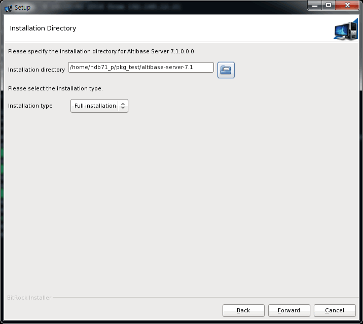

- System Requirements
- Altibase Package Installer
- 1. Pre-check the installation environment
- 2. Download the Package Installer
- 3. Run the Altibase Package Installer
- 4. Enter installation directory and select installation type
- 5. Set Altibase Properties
- 6. Check Altibase properties
- 7. Install Altibase Product
- 7. Enter Altibase License Key
- 8. Preview Altibase Quick Setup Guide
- 10. Complete the Installation
- 11. Post-installation
System Requirements
The requirements and recommendations mentioned in this chapter are based on a general-purpose of using the database. Therefore, it may vary depending on the user's database system or the purpose of using the database. For more information on system requirements, contact the Altiabse customer service portal (http://support.altibase.com/en/).
The following description is based on how to install Altibase products on Unix/Linux.
Memory
64-bit OS: at least 1GB (recommended: 2GB or more, no maximum limit)
CPU
1 CPU or more (recommended: 2 CPUs or more)
Hard Disk
When installing the patch, the Altibase package installer creates a backup of the file to which the patch is applied and saved it in the $ALTIBASE_HOME/APatch directory. In this directory, separate backup directories are created for each patch are located. These backup files will be used later to roll back the patch.
In addition, executable files used when uninstalling or rolling back a patch are installed in the $ALTIBASE_HOME/APatch directory when installing the product or applying a patch.
* Note 1: On the HP platform, automatic backup and rollback are not supported when patching the installer. The user must manually back up data and log files.
* Note 2: Only files installed through the package installer are backed up to this backup directory, and files created after product installation, such as data files and log files, are not backed up.
Network
When using the replication function, it is recommended to use a dedicated line.
Altibase Package Installer
Altibase installation procedure
To install the Altibase product, follow the steps below. The detailed description of each process is described in Product installation according to the OS.
- Pre-check the installation environment
- Download Altibase Package Installer
- Run the Altibase Package Installer
- Enter installation directory and select installation type
- Set Altibase properties
- Check Altibase properties
- Install Altibase Product
- Enter Altibase License Key
- Preview Altibase Quick Setup Guide
- Complete the installation
- Post-installation
1. Pre-check the installation environment
Before installing the product, the Altibase Package Installer first checks the environment to see if the environment of the equipment to be installed satisfies the requirements.
This process is performed without showing the graphical user interface. During this process, the Altibase Package Installer checks the following information about the server equipment to be installed.
- OS name and version
- Mode of OS (64-bit or 32-bit)
If the information checked by the Altibase Package Installer does not match, an error message will be returned and the installation will be stopped. This is because finding problems with system configuration at an earlier stage reduces the likelihood of encountering problems during the installation.
2. Download the Package Installer
Visit the Altibase Customer Support Service Portal (http://support.altibase.com/en/) to download the installer suitable for the OS.
The name of the Altibase Package Installer follows the rules shown in the example below.
Ex) Altibase server package installer
Ex) Altibase client package installer
The Altibase server package and the client package are separated into different packages. However, the Altibase server package includes the client package.
The Altibase Package Installer is provided for each OS below. Before the installation, check the OS related information with the command below and select an appropriate package installer.
$ uname -a Linux rhel6-x64 2.6.32-71.el6.x86_64 #1 SMP Wed Sep 1 01:33:01 EDT 2010 x86_64 x86_64 x86_64 GNU/Linux
| OS | CPU | Version | Bit (Server) | Bit (Client) |
|---|---|---|---|---|
| AIX | PowerPC | 6.1 tl03 or later | 64-bit | 64 bit, 32-bit |
| HP-UX | IA64 | 11.31 or later | 64-bit | 64 bit, 32-bit |
| SUN | SPARC | 2.8 or later | 64-bit | 64 bit, 32-bit |
| LINUX | x82, x86-64 (GNU glibc 2.21 or later) | redhat 6.0 or later | 64-bit | 64 bit, 32-bit |
| Windows | x86, x86-64 | Windows 2008 Windows 2012 Window 7, 8 | 64-bit | 64 bit, 32-bit |
3. Run the Altibase Package Installer
To install the product, the Altibase Package Installer can be started in two modes:
- Interactive command-line mode: Run in this mode when the DISPLAY environment variable is not set.
- GUI (Graphical User Interface): Run in this mode when the DISPLAY environment variable is set.
Unix users must download the Altibase Package Installer and change the file permission with chmod to execute it.
$ chmod +x altibase-server-7.1.0.0.0-LINUX-X86-64bit-release.run
Run the Altibase Package Installer.
$./altibase-server-7.1.0.0.0-LINUX-X86-64bit-release.run
If the installation mode is set to GUI mode, the following start panel is displayed.

4. Enter installation directory and select installation type
In the installation directory panel below, select the Altibase home directory, that is, the directory where Altibase will be installed and select the package installation type.

Select "Full Installation" to install the Altibase product, or select "Patch Installation" to patch an existing version.
If the Altibase product is already installed in the directory entered by the user, a warning message is displayed in the dialog box.
In this case, the user must either select a different directory or uninstall the product installed in that directory first.

5. Set Altibase Properties
Step 1: Basic Database Operation Properties
Step 2: Database Creation Properties
Step 3: Set Database Directories
Step 1: Basic Database Operation Properties
- Database name
- Connection port number
- Maximum size of the memory database
- Buffer size
Specify whether to generate the SQL script to create a new database (ie, whether to perform step 2).If YES is selected, step 2 is performed, otherwise step 2 is skipped.Regardless of whether an SQL script is created using this process, a new database can be created using the following statement: server create [DB Character-set] [National Character-set].
Step 2: Database Creation Properties
The SQL script created in step 2 is saved in the $ALTIBASE_HOME/install/post_install.sh file.
- Initial database size
- Database archive logging mode
- Nonarchievelog
- Archievelog
- Database character set
- MS949
- US7ASCII
- KO16KSC5601
- BIG5
- GB231280
- MS936
- UTF-8
- SHIFT-JIS
- MS932
- EUC-JP
- National character set
- UTF-16
- UTF-8
Step 3: Set Database Directories
- Default disk database directory
- Memory database directory
- Archive log directory
- Transaction log directory
- Log anchor file directory

In order to set the value of a property not included in this step or change the property value set in Step 1 or Step 3 later, $ALTIBASE_HOME/conf/altibase.properties file can be edited.
6. Check Altibase properties
The next panel shows the property values set in the previous process.
To change these properties after installation is complete, please modify the following file: /home/hdb71_p/pkg_test/altibase-server-7.1/conf/altibase.properties. 1. Altibase Property Settings: Step 1: Basic Database Operation Properties 1) Database name: [mydb] 2) Altibase connection port number (1024-65535): [20300] 3) Maximum size of memory database: [2G] 4) Buffer area size for caching disk-based database pages: [128M] 2. Altibase Property Settings: Step 2: Database Creation Properties 1) Initial database size [10M] 2) Database archive logging mode [noarchivelog] 3) Database character set [UTF8] 4) National character set [UTF8] 3. Altibase Property Settings: Step 3: Set Database Directories The database will not operate properly if any of these directories are removed. 1) Disk database directory: [/home/hdb71_p/pkg_test/altibase-server-7.1/dbs] 2) Memory database directory: [/home/hdb71_p/pkg_test/altibase-server-7.1/dbs] 3) Archive log directory: [/home/hdb71_p/pkg_test/altibase-server-7.1/arch_logs] 4) Transaction log directory: [/home/hdb71_p/pkg_test/altibase-server-7.1/logs] 5) Log Anchor file directories: Directory 1: [/ home/hdb71_p/pkg_test/altibase-server-7.1/logs] Directory 2: [/home/hdb71_p/pkg_test/altibase-server-7.1/logs] Directory 3: [/home/hdb71_p/pkg_test/altibase-server-7.1/ logs]

7. Install Altibase Product
When the installation is completed, the installer performs the following tasks without a GUI screen.
- The set properties are updated in the altibase.properties file.
- The altibase_user.env file, which contains the basic environment for running the Altibase server, is created in the $ALTIBASE_HOME/conf directory. In addition, the command to execute this file is added to the environment configuration file (.bashrc, .bash_profile, or .profile, etc.) of the user account.
7. Enter Altibase License Key
Below is a screen to enter the license key of Altibase. The Altibase Package Installer offers three ways to enter the license key.
- Manually enter the license key
- Select the file where the license key is stored.
- Post license registration: If a license key has not obtained yet, the license key can be obtained later and copy the new license file to $ALTIBASE_HOME/conf file directory. However, if a license is not registered during this process, Altibase will not ask whether or not to create a database in the next step.
$ cp license $ALTIBASE_HOME/conf/

8. Preview Altibase Quick Setup Guide
The Altibase Quick Setup Guide panel guides users to run Altibase after successful installation.
The Altibase Package Installer provides the following two shell scripts to make it easier for users to set system kernel parameters and environment variables.
- ALTIBASE_HOME/install/pre_install.sh : This script contains a minimum set of essential system kernel parameters, and explains their recommended values and how to set them.
- $ALTIBASE_HOME/install/post_install.sh : This script contains the SQL script to create a new database if step 2 was properly performed in the Altibase property setting process.
- $ALTIBASE_HOME/packages/catproc.sql : This script contains the SQL script for using the PSM.
If the checkbox is selected in the next panel, the Altibase package installer will create a new database and run the script to use PSM, which will take a little longer to install.
If the checkbox is not selected, the user must manually create the database and execute the PSM script after installing the product.

The window below is a screen that appears during database creation.
10. Complete the Installation
After the successful installation, the following panel appears.

After clicking the Finish button, the environment setting guide screen appears as follows.

11. Post-installation
After the successful installation, do the following operations:
- If the system kernel parameters were not set during the installation process, set them manually. Refer to the $ALTIBASE_HOME/install/pre_install.sh file.
- To run the login shell script, do one of the following:
- Log out and log back in
- Execute ~/.bash_profile
- Execute source ~/.bash_profile
3. If the database was not created in the installation step, create it as follows. - if the properties were entered for creating a database during the installation, run the $ALTIBASE_HOME/install/post_install.sh script.
$ sh post_install.sh dbcreate - If the properties were not entered for creating a database during the installation, run the server script.
$ server create utf8 utf8 - If the properties were not entered for using PSM during the installation, run catproc.sql.
$ isql -s 127.0.0.1 -u sys -p manager -silent -f ${ALTIBASE_HOME}/packages/catproc.sql
{kind=link}
{kind=link}
{kind=link}
{kind=link}
{kind=link}
{kind=link}
{kind=link}
{kind=link}
{kind=link}